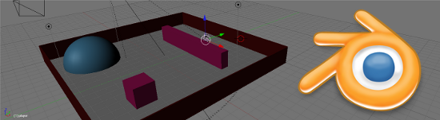
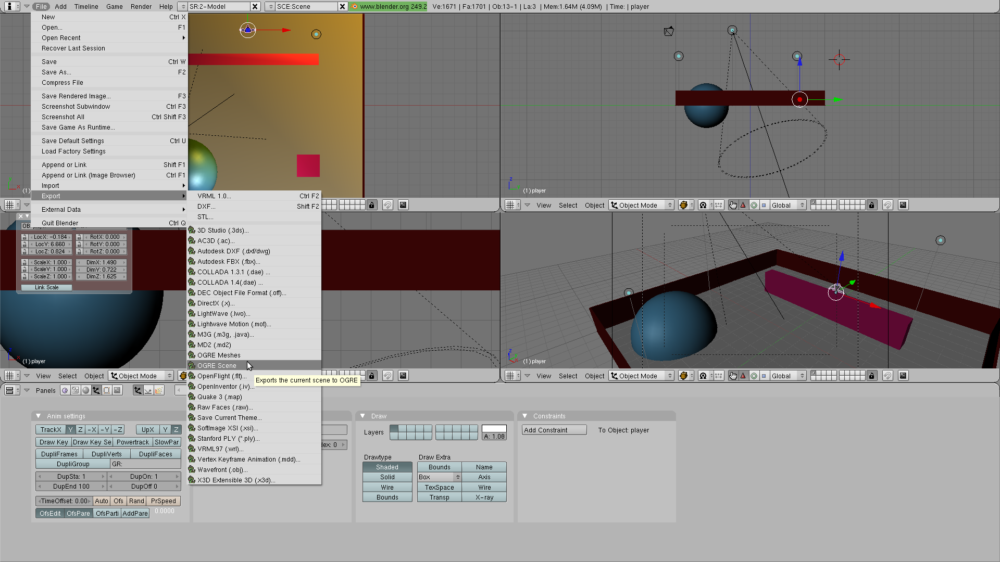
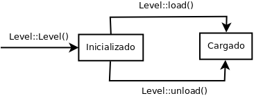
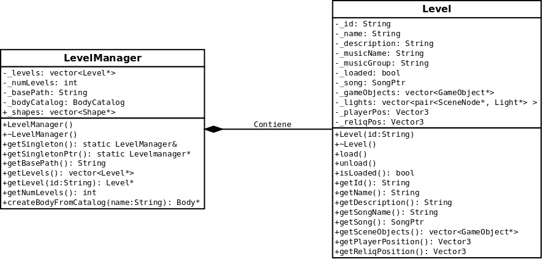
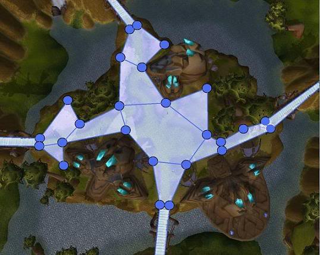
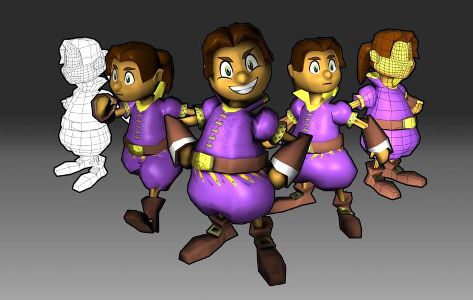
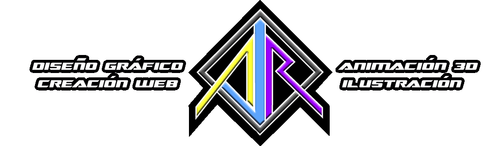

Mar 1, 2011 · 1 minute read · Comments
Games development

El primer sorprendido soy yo mismo y es que IberOgre ha aparecido en la cuarta sección de noticias de la web oficial de Ogre.
Para el proyecto es un acontecimiento de extrema importancia ya que una enorme cantidad de desarrolladores consulta la web, veremos si las visitas aumentan. En el plano personal no puedo estar más contento ya que ver recompensado mi esfuerzo de esta manera es de lo más gratificante. Esto me ha dado más ganas si cabe para continuar trabajando al 100%.
La historia de todo esto es muy sencilla. Puse un post en el foro hablando sobre IberOgre y Sion Tower en busca de usuarios hispano-hablantes con escasos resultados. No obstante, parece ser que los administradores se han fijado y ha acabado en plena portada de la web de mi motor de renderizado favorito.
Se lo he agradecido a los administradores via Twitter en inglés pero de nuevo:
¡Muchas gracias!
Feb 26, 2011 · 7 minute read · Comments
Games development

Como pudisteis ver en el anterior vídeo ya he conseguido cargar un escenario creado con Blender. En este artículo pretendo explicar porqué he escogido Blender como editor de escenarios y cómo funciona el sistema de carga y gestión de niveles. Como veremos, aún me quedan puntos por implementar pero no quería abarcarlo todo desde el principio. Todo a su tiempo, al menos el diseño está pensado para ser escalable.
Blender vs Ogitor
A comienzos de enero escribí un artículo en el que hablaba sobre un editor de escenarios desarrollado con QT y Ogre llamado Ogitor. Más tarde hice pruebas para ver si soportaba todo lo que necesitaba pero me di cuenta de que se quedaba corto. Es un proyecto muy prometedor pero le falta madurez y algunas cosas por implementar.

En cambio, Blender es un editor 3D consagrado, flexible, estable y con una comunidad mucho mayor. Busqué más alternativas y pregunté en Twitter por un buen editor de niveles compatible con el formato DotScene. El usuario @makiolo también sugirió amablemente Blender. Tras varias pruebas pude obtener el vídeo del anterior artículo. Si todo va bien y no me encuentro con ningún obstáculo insalvable utilizaré Blender.
DotScene es un formato xml para definir escenas 3D en Ogre, podéis acceder a su DTD aquí. Contiene información sobre los nodos que componen la escena: cámaras, luces y entidades. Así mismo también ofrece datos sobre la luz ambiente y el color de fondo. A continuación tenéis el fichero xml correspondiente a la escena por defecto de Blender (un cubo, una cámara y un punto de luz):
<scene formatVersion="1.0.0">
<nodes>
<node name="Lamp">
<position x="4.076245" y="5.903862" z="-1.005454"/>
<quaternion x="-0.284166" y="0.726942" z="0.342034" w="0.523275"/>
<scale x="1.000000" y="1.000000" z="1.000000"/>
<light name="Spot" type="point">
<colourdiffuse r="1.000000" g="1.000000" b="1.000000"/>
<colourspecular r="1.000000" g="1.000000" b="1.000000"/>
<lightattenuation range="5000.0" constant="1.000000" linear="0.033333" quadratic="0.000000"/>
</light>
</node>
<node name="Cube">
<position x="0.000000" y="0.000000" z="-0.000000"/>
<quaternion x="0.000000" y="0.000000" z="-0.000000" w="1.000000"/>
<scale x="1.000000" y="1.000000" z="1.000000"/>
<entity name="Cube" meshFile="Cube.mesh"/>
</node>
<node name="Camera">
<position x="7.481132" y="5.343665" z="6.507640"/>
<quaternion x="-0.212056" y="0.386910" z="0.085793" w="0.893293"/>
<scale x="1.000000" y="1.000000" z="1.000000"/>
<camera name="Camera" fov="37.849289" projectionType="perspective">
<clipping nearPlaneDist="0.100000" farPlaneDist="100.000000"/>
</camera>
</node>
</nodes>
<externals>
<item type="material">
<file name="Scene.material"/>
</item>
</externals>
<environment>
<colourambient r="0.000000" g="0.000000" b="0.000000"/>
<colourbackground r="0.056563" g="0.220815" b="0.400000"/>
</environment>
</scene>
Ya comenté que utilizaría la biblioteca pugixml para procesar los ficheros xml de cada nivel. Tiene un rendimiento excelente, cuenta con una documentación clara y es muy sencilla de utilizar. No requiere instalaciones ya que simplemente hay que añadir tres ficheros al proyecto. Lo que sigue es un pequeño ejemplo para leer la información del entorno de la escena:
void Level::loadAmbientInfo(const pugi::xml_document& doc) {
// Cargamos el documento
pugi::xml_node rootNode;
if (!(rootNode = doc.child("scene"))) {
cerr < < "Level::loadNodesInfo(): error al leer el fichero xml en elemento scene" << endl;
exit(1);
}
// Buscamos el nodo ambient
pugi::xml_node enviromentNode;
if (!(enviromentNode = rootNode.child("environment"))) {
cerr << "Level::loadNodesInfo(): error al leer el fichero xml en elemento enviroment" << endl;
exit(1);
}
// Tomamos el SceneManager
Ogre::SceneManager* sceneManager = Game::getSceneManager();
// Leemos ambientColour
Ogre::ColourValue ambientColour;
pugi::xml_node colourNode = enviromentNode.child("colourAmbient");
ambientColour.r = colourNode.attribute("r").as_float();
ambientColour.g = colourNode.attribute("g").as_float();
ambientColour.b = colourNode.attribute("b").as_float();
// Establecemos el ambient colour
sceneManager->setAmbientLight(ambientColour);
}
Tenemos un problema y es que no nos basta con conocer los objetos que componen la escena. Para los escenarios de Sion Tower necesitamos almacenar más datos: nombre, descripción, música que sonará durante la partida, icono, oleadas de enemigos, posición inicial del personaje, posición de la reliquia, navigation mesh (para la búsqueda de caminos), etc. DotScene proporciona un campo userData para albergar información personalizada pero es complicado trabajar con él desde Blender. En secciones posteriores veremos cómo he abordado este problema.
Exportando desde Blender a DotScene
Para exportar una escena de Blender al formato DotScene es necesario instalar el plugin correspondiente. Las instrucciones son las siguientes:
- Descargar el plugin
- Si utilizas GNU/Linux, copia el plugin en ~/.blender/scripts/ y dale permisos de ejecución.
- Si utilizas Windows copia el plugin en la carpeta plugins dentro del directorio de instalación de Blender. Por defecto es C:\Archivos de Programa\Blender Foundation\Blender.

Cuando tengamos nuestra escena en Blender hacemos click en file → export → OGRE Scene. Debemos seleccionar los objetos que queramos exportar (normalmente todos) y corregir los ejes X,Z ya que en Blender se disponen al revés que en Ogre. Por último elegimos la ruta destino y pulsamos sobre “exportar”.
Sistema de carga de niveles
El sistema de carga de niveles de Sion Tower se compone de dos clases principales: Level y LevelManager. La clase Level contiene la información de un nivel de juego completo (escena, oleadas de enemigos, posición inicial del personaje, etc). Una vez creado, un objeto Level puede encontrarse en dos estados: inicializado o cargado. Al estar inicializado sólo estará disponible su información básica como el nombre o la descripción. Si empleamos el método Level::load podremos acceder a los objetos del escenario, la música que deberíamos reproducir, etc aunque ocupará mucha más memoria.

Cuando se crea un nivel, se lee la información básica de un sencillo fichero xml independiente del DotScene. Los niveles tienen un identificador de forma que el fichero DotScene debe ser id_scene.xml y el que contiene información básica debe ser id_info.xml. Lo siguiente es un ejemplo de fichero de información básica:
< ?xml version="1.0" encoding="UTF-8" ?>
<basicinfo>
<name>The Hall</name>
<description>Some Goblins assault the main Hall of the Tower</description>
<song name="music.ogg" group="" />
</basicinfo>
La clase LevelManager es la encargada de detectar los niveles disponibles, inicializarlos, controlar su ciclo de vida y permitir al usuario el acceso a los mismos. Sigue el patrón Singleton y en el momento de su creación toma todos los ficheros _info.xml del directorio media/levels para construir los niveles.

Convenciones en el nombrado
Los nodos que contengan entidades (mayas tridimensionales) pueden tener varios significados dentro de Sion Tower en función de su nombrado.
- Objetos colisionables: siguen el patrón “scene – objectType – objectNumber”. El tipo de objeto nos indica el modelo colisionable que posee (table, bigWall, chair…). El número evita que tengamos entidades duplicadas.
- Posición del jugador: la entidad “player” se utiliza para definir la posición inicial del jugador.
- Posición de la reliquia: la entidad “relic” define la posición del objeto precioso que debe proteger nuestro protagonista.
El fichero DotScene generado con Blender deberá contener información adicional aún no implementada como:
- Navigation mesh: maya que indica la superficie por la que pueden desplazarse los enemigos. Resultará muy útil para la búsqueda de caminos y la inteligencia artificial.
- Oleadas de enemigos: otras entidades deberán definir el tipo de enemigo, el momento en el que entrará y por dónde lo hará.

El navigation mesh puede representarse mediante pequeñas esferas, así como la posición inicial de la reliquia o el personaje, a gusto del diseñador de niveles. Lo importante es que se cumplan las reglas de nombrado.
Catálogo de objetos colisionables
La clase LevelManager lleva internamente un catálogo de objetos Body que definen los tipos de elementos colisionables que podemos encontrar en la escena. Al cagar un nivel y toparnos con una entidad del tipo “scene – objectType – objectNumber” le pedimos a LevelManager que nos devuelva el Body correspondiente con el identificador indicado mediante el método createBodyFromCatalog(). El catálogo se pruebla al crear la única instancia de LevelManager desde un fichero como el siguiente:
< ?xml version="1.0" encoding="UTF-8" ?>
<bodies>
<body name="floor" type="1">
<shape type="plane">
<position x="0" y="0" z="0"/>
<normal x="0" y="1" z="0"/>
</shape>
</body>
<body name="wallcentered" type="2">
<shape type="obb">
<center x="0" y="0" z="0"/>
<extent x="0.5" y="1" z="0.04"/>
<axes a00="1" a01="0" a02="0" a10="0" a11="1" a12="0" a20="0" a21="0" a22="1" />
</shape>
</body>
<body name="wall" type="2">
<shape type="obb">
<center x="0" y="1" z="0"/>
<extent x="0.5" y="1" z="0.04"/>
<axes a00="1" a01="0" a02="0" a10="0" a11="1" a12="0" a20="0" a21="0" a22="1" />
</shape>
</body>
<body name="cube" type="2">
<shape type="obb">
<center x="0" y="0" z="0"/>
<extent x="1" y="1" z="1"/>
<axes a00="1" a01="0" a02="0" a10="0" a11="1" a12="0" a20="0" a21="0" a22="1" />
</shape>
</body>
<body name="sphere" type="2">
<shape type="sphere">
<center x="0" y="0" z="0"/>
<radius value="1"/>
</shape>
</body>
</bodies>
Próximamente
Espero terminar de pulir el sistema de niveles y conseguir el arte necesario para subir un nuevo vídeo más vistoso. ¡Seguiré informando!
Feb 23, 2011 · 1 minute read · Comments
Computing
En lo que queda de semana es probable que haya menos actividad en el blog debido a que asistiré a la ADWYS CON 2011. Un congreso sobre ingeniería web y seguridad informática (¡no todo iban a ser videojuegos!) organizado por mis compañeros de la Asociación de Desarrollo Web y Seguridad de la Universidad de Cádiz. Han trabajado durísimo, cuentan con ponentes de alto nivel y el número de inscritos ha superado las expectativas.
Como presidente de la ADVUCA (Asociación de Desarrollo de Videojuegos de la Universidad de Cádiz) creo que son un ejemplo a seguir. Hasta el momento han organizado varias jornadas, concursos y actividades con estupenda acogida. Me estoy enfrentando a la burocracia que conlleva montar una Asociación, que al final es como constituir una empresa pero sin esperanzas de que de beneficios. Por tanto, comprendo su sacrificio y les deseo lo mejor.
Me voy porque llego a lo justo, aquí tenéis el programa oficial para que os llene la envidia.
Feb 22, 2011 · 1 minute read · Comments
Games development

Vengo con una fantástica noticia para el proyecto Sion Tower: ¡tenemos patrocinador! Antonio Jiménez Rodríguez (AJR) es socio de una empresa de diseño gráfico de Cádiz y se ha interesado por el proyecto.
Antonio Jiménez colaborará modelando, texturizando y animando los personajes, una aportación de lo más impresionante. Hará un encomiable esfuerzo compatibilizando sus compromisos profesionales con la colaboración en un proyecto de Software Libre como es Sion Tower. Por el momento nos muestra al protagonista del juego en varias poses demostrando su talento. Podéis encontrar más información sobre sus trabajos en su blog personal.

Es muy común que a los programadores se nos resista el arte de nuestros proyectos y por ello considero un paso gigante la incorporación de Antonio Jiménez. Desde aquí, le doy las gracias colocándolo en la sección de patrocinadores de IberOgre y Sion Tower (barra lateral del blog).
¡Pronto mostraremos más!
Feb 21, 2011 · 3 minute read · Comments
Computing

Muchas veces he querido grabar un vídeo de cualquier proyecto personal (como los que he publicado de Sion Tower) pero siempre he tenido muchos problemas a la hora de hacerlo con Software Libre en mi preciada Ubuntu. Hasta ahora me había visto obligado a recurrir a productos privativos pero por fin he encontrado herramientas libres con la suficiente madurez para conseguir exactamente lo que quiero. En este artículo voy a comentar mi receta de la salvación para hacer un buen screencast.

Screencast con XVidCap
XvidCap es una sencilla aplicación para entornos X Window consistente en una barra con controles de grabación básicos. Podemos grabar el escritorio completo, una porción rectangular o lo que ocurre en una ventana concreta utilizando el selector que incorpora. Dentro de su panel de opciones es posible elegir los cuadros por segundo de grabación así como los codecs de audio y vídeo a emplear.
Su rendimiento es excelente, grabando la demo técnica de Sion Tower a 1280×720 alcanzaba los 15 fps lo cual es suficiente para que se vea fluido. Estuve probando varias configuraciones y lo mejor era seleccionar el formato MPEG y unos fps reducidos de forma que la tasa de aciertos en la captura fuese mayor. La única pega que le encuentro es que no captura el sonido de forma correcta. O bien lo desactivaba o lo único que escuchaba era un ruido insoportable, esto lo solucioné con la siguiente herramienta.

Está en los repositorios de Ubuntu, para instalarlo basta:
sudo apt-get install xvidcap

Grabación de audio con Audacity
Audacity es el software de edición de sonido libre por excelencia, es compatible con infinidad de formatos y permite las operaciones básicas además de otras más avanzadas como la aplicación de efectos.
Antes de comenzar la captura con XVidCap activo la grabación de audio en Audacity de manera que una aplicación se encarga del vídeo y la otra del sonido. Una vez he terminado el vídeo, exporto la grabación a OGG. En post-producción me limito a cortar y sincronizar ambas pistas.

También está en los repos, así que:
sudo apt-get install audacity

Edición de vídeo con OpenShot 1.3
He probado muchísimos editores de vídeo en Linux con resultados cuanto menos decepcionantes: Pitivi, Cinelerra, Kino, Avidemux… Todos ellos han fracasado a la hora de ajustarse a mis necesidades que tampoco son nada del otro mundo. Cuando probé por primera vez la última versión de OpenShot Video Editor mis ojos se abrieron como platos, pues era la respuesta a todas mis plegarias.
OpenShot Video Editor tiene una interfaz extremadamente intuitiva, de hecho, tardé menos de 15 minutos en editar la demo técnica de Sion Tower y dejarla exactamente como yo quería. Sólo tuve dudas al aplicar transiciones y su fantástico manual me lo solucionó al instante. Cuenta con la clásica línea de tiempo sobre la que colocamos a nuestro antojo cualquier combinación de vídeo, audio o imágenes. Permite añadir transiciones, aplicar efectos y configurar multitud de parámetros. A pesar de las posibilidades que ofrece, lo básico queda a la vista y no es necesario bucear por oscuros menús.
Es compatible con Inkscape y Blender (2.5 en adelante) lo que nos permite introducir contenido adicional como carteles y gráficos vectoriales en 2D o 3D. A medida que trabajamos podremos observar el resultado a través de su vista previa. Una vez estemos satisfechos exportaremos el proyecto utilizando cualquiera de la infinidad de perfiles disponibles. Cabe destacar que ofrece la posibilidad de subir el vídeo directamente a YouTube o Vimeo introduciendo nuestras credenciales.
Una maravilla oiga.

La última versión no está en los repositorios y debe ser instalada añadiendo el PPA correspondiente:
sudo add-apt-repository ppa:jonoomph/openshot-edge
sudo apt-get update
sudo apt-get install openshot openshot-doc